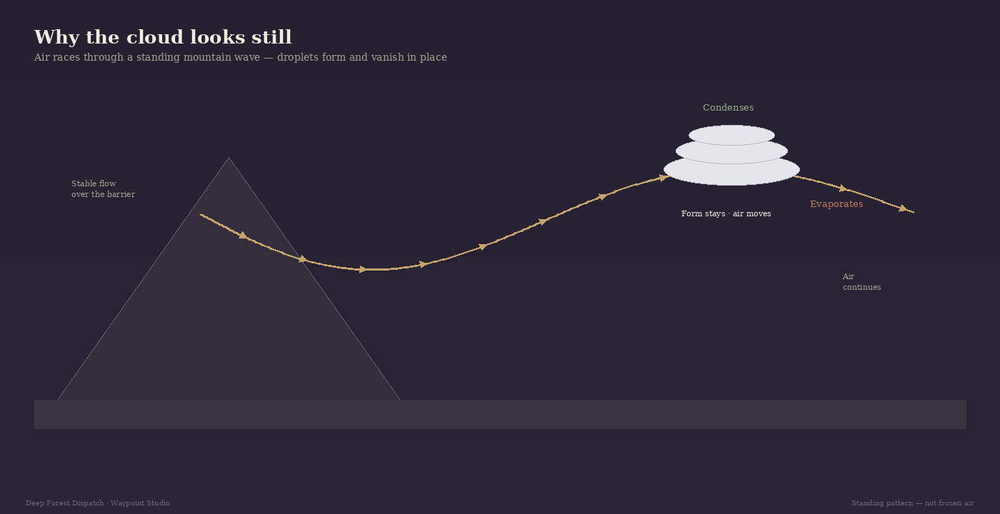

The cloud that looks parked
Lenticular clouds can sit over or downwind of mountains for hours with edges too smooth to look like ordinary weather. Photographers chase them. Pilots watch them. Casual observers sometimes report something stranger.
Stillness does not mean the air stopped. The form can stay nearly fixed while wind races through the wave that makes it. The Landsat view above shows New Zealand’s “Taieri Pet” — one famous example of a shape held in place by flow.

A standing wave in the airflow
When strong wind meets a mountain barrier — especially with stable air aloft — the flow is forced up and over. Downwind, the atmosphere can oscillate in lee waves: crests where air rises, troughs where it sinks. The wave pattern stays nearly fixed relative to the mountain while air parcels travel through it.
As air rises through a crest it expands and cools. If it reaches the dew point, vapor condenses into droplets or ice. As that same air descends into the next trough it warms and the cloud evaporates. Repeat continuously and you get a lens that appears glued to the crest.
Plates, seasons, and what they signal
When moist and drier layers alternate with height, only some levels of the same wave light up. That yields the stacked “pile of plates” look. Lenticulars show up most often when winds aloft are strong — frequently winter and spring in mid-latitude ranges such as the Rockies — and wherever steep terrain sits across the flow, from the Andes to New Zealand’s Southern Alps.
A lenticular is a moisture marker on a mountain wave. The wave can exist without cloud if the air is too dry. When the cloud is present, it advertises rising and sinking motion strong enough to reach saturation at the crests. The same wave family can mean turbulence for aviation — including rotors beneath some crests. For everyone else, it is a readable sign of fast, stable flow over terrain.
The same mountain–air relationship that builds rain shadows on the wet and dry sides of a range can, under different moisture and stability, write standing waves on the lee. Waypoint’s Dashboard can show whether strong flow and mountain weather are plausible; Scenes helps when the sky offers a stationary lens. Neither detects lenticulars automatically — and they do not need to.